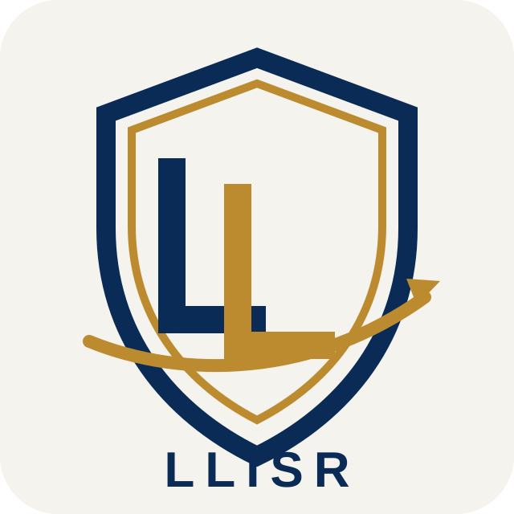

Protection rapprochée
Une protection discrète se prépare en fonction des horaires, des destinations, de l’exposition et du niveau de visibilité souhaité. Le périmètre de la mission est défini avec le client avant toute intervention.

LLISR / Sécurité physique et protection rapprochée en Israël
Accompagnement personnalisé · Coordination professionnelle
LLISR est une société de conseil et de sécurité. Nous accompagnons les particuliers, familles, dirigeants, entreprises, délégations et institutions dans la préparation et la coordination de leurs besoins de sécurité physique en Israël.
Une protection discrète se prépare en fonction des horaires, des destinations, de l’exposition et du niveau de visibilité souhaité. Le périmètre de la mission est défini avec le client avant toute intervention.
Audits des accès, des vulnérabilités, des mesures existantes et des habitudes d’utilisation des lieux. Selon la mission, l’accompagnement peut inclure la planification de la surveillance d’une résidence et des recommandations hiérarchisées.
Planification des déplacements, examen des lieux et coordination des besoins de sécurité pour des visites professionnelles, des événements et des groupes répartis sur plusieurs sites.
Évaluation des risques, plans de sécurité, procédures opérationnelles, vérifications d’antécédents et diligence raisonnable selon le besoin convenu. Les recommandations sont adaptées au contexte du client.
Nous précisons les personnes et les biens à protéger, le programme, les destinations et les contraintes. Nous définissons ensuite le niveau d’accompagnement, les responsabilités et les modalités de coordination. Transport et logistique peuvent être intégrés lorsque cela est utile.
Pour les missions en Europe, aux États-Unis ou dans d’autres destinations, consultez notre page de conseil en sûreté à l’international. La disponibilité, les exigences locales et les modalités de prestation sont définies pour chaque projet.
Conseil en sûreté à l’internationalOui. Les besoins des dirigeants, familles, clients privés et délégations internationales peuvent être coordonnés avec le transport, la logistique et l’assistance VIP.
Les besoins liés à une résidence peuvent faire l’objet d’un audit, d’une planification de sécurité ou d’une coordination de gardiennage, selon le périmètre et la disponibilité convenus.
Indiquez les dates, les lieux, le nombre de personnes ou de sites et les activités prévues. Évitez les détails personnels ou opérationnels sensibles lors du premier contact.
Décrivez votre activité, les dates, les destinations et les besoins envisagés. Nous pourrons proposer un accompagnement adapté. Évitez les informations sensibles lors du premier contact.